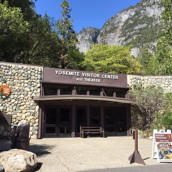
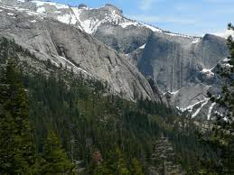

Yosemite Valley
Valley Visitor Center (all year): Ranger-staffed information desk, bookstore, Spirit of Yosemite film, and exhibit hall detailing the park's geology, plant and animal life, and history.
Valley Wilderness Center (May to October): Offers wilderness permits, bear canisters, maps, and guidebooks. Information on pre-trip planning, minimum-impact camping, and the Yosemite Wilderness.

Yosemite Falls
Upper Yosemite Fall: The 1,430-foot (440 m) plunge alone is among the twenty highest waterfalls in the world. Trails from the valley floor and down from other park areas outside the valley lead to both the top and base of Upper Yosemite Fall.
Middle Cascades: Between the two obvious main plunges there are a series of five smaller plunges collectively referred to as the Middle Cascades. Taken together these account for a total drop of 675 feet (206 m), more than twice the height of the Lower Fall.
Lower Yosemite Fall: The final 320-foot (98 m) drop adjacent to an accessible viewing area, provides the most-used viewing point for the waterfalls. Yosemite Creek emerges from the base of the Lower Fall and flows into the Merced River nearby.

Cloud's Rest
The summit can be reached by a 7.2-mile (11.6 km) trail hike from Tioga Pass Road or a 9.4-mile (15.1 km) trail hike from Happy Isles by way of Little Yosemite Valley. There are also several technical routes available.
Clouds Rest is an arête, a thin, almost knife-like, ridge of rock formed when glaciers eroded away solid rock to form Tenaya Canyon and Little Yosemite Valley. The northwest face, mostly solid granite, rises 5,000 feet (1,520 m) above Tenaya Creek.
Backpacker Magazine Review